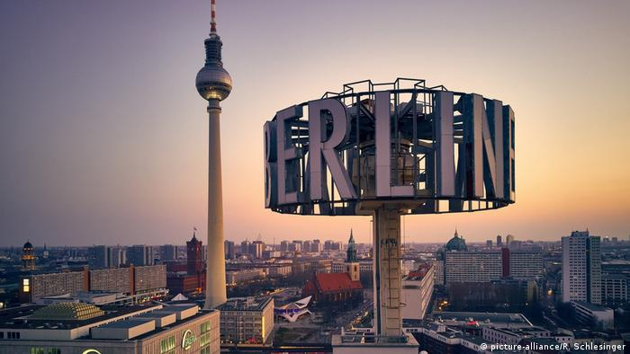
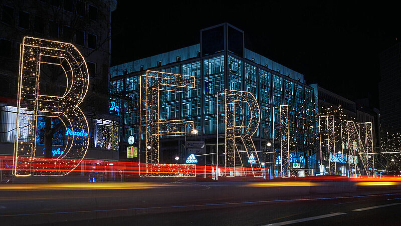
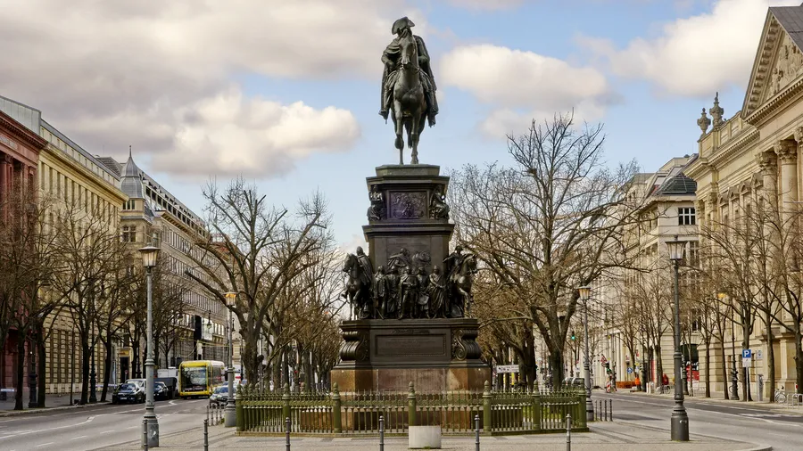

Berlin

Berlin (/bɜːrˈlɪn/ bur-LIN, German: [bɛʁˈliːn] [7] is the capital and largest city of Germany by both area and population.[8][9] Its 3.7 million inhabitants make it the European Union's most populous city, according to population within city limits.[2] One of Germany's sixteen constituent states, Berlin is surrounded by the State of Brandenburg and contiguous with Potsdam, Brandenburg's capital. Berlin's urban area, which has a population of around 4.5 million, is the second most populous urban area in Germany after the Ruhr.[3] The Berlin-Brandenburg capital region has around 6.2 million inhabitants and is Germany's third-largest metropolitan region after the Rhine-Ruhr and Rhine-Main regions.[10] Berlin straddles the banks of the Spree, which flows into the Havel (a tributary of the Elbe) in the western borough of Spandau. Among the city's main topographical features are the many lakes in the western and southeastern boroughs formed by the Spree, Havel and Dahme, the largest of which is Lake Müggelsee. Due to its location in the European Plain, Berlin is influenced by a temperate seasonal climate. About one-third of the city's area is composed of forests, parks, gardens, rivers, canals and lakes.[11] The city lies in the Central German dialect area, the Berlin dialect being a variant of the Lusatian-New Marchian dialects.
Quote

Berlin's history has left the city with a polycentric organization and a highly eclectic array of architecture and buildings. The city's appearance today has been predominantly shaped by the key role it played in Germany's history during the 20th century. All of the national governments based in Berlin – the Kingdom of Prussia, the 2nd German Empire of 1871, the Weimar Republic, Nazi Germany, East Germany, as well as the reunified Germany – initiated ambitious reconstruction programs, with each adding its own distinctive style to the city's architecture.
Quote

Berlinerisch or Berlinisch is not a dialect linguistically. It is spoken in Berlin and the surrounding metropolitan area. It originates from a Brandenburgish variant. The dialect is now seen more like a sociolect, largely through increased immigration and trends among the educated population to speak standard German in everyday life.
Quote
